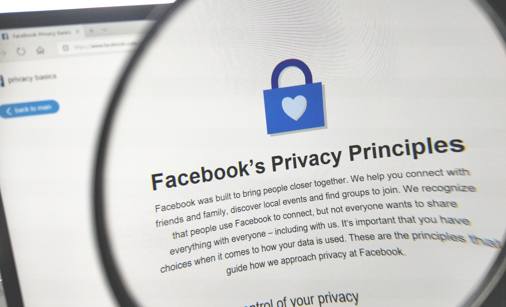

Nettvett / Tema /
Sist oppdatert 08.09.2019
Politikere har nå blitt enige om at maktene de store teknologiske selskapene har må dempes. Og deres overvåking kan være en trussel mot demokratiet.
Facebook er ett av de selskapene. Facebook sjef Mark Zuckerberg har for eksempel gitt usann informajson til komiteen, og Facebook er på ingen måte villig til å bli gransket eller regulert av komiteen ettersom at de har brutt Personvern og Konkurannseloven. Facebook finner informajson om oss og tjener penger på det ved å selge den informasjonen. Samtidig prøver Mark Zuckerberg å benekte det. Men det er ikke bare Facebook som gjør dette, Google og Youtube spiller også en stor rolle i å selge andres informajson. Anonnsører kjøper denne informasjonen og vet derfor mye mer om oss enn det vi vet. Det gjør det lett for annonsørere å manipulere brukere enn noen gnag før

Siden det er så mange som stoler på disse autoriteten, og telefonen er på måte en kompis du tar med deg overalt, blir det lett for de store teknologiske selskapene og anonsørerne og manipulere deg mer profesjonelt en noen gang før. Dette gir dem kontroll over hele forbruker nettet.

Still inn de grunnleggende personverninnstillingene dine. Facebooks standardvalg er at profilen din, med statusoppdateringer, bilder, innlegg, biografi, familie og sivilstand, er offentlig for alle. Du kan imidlertid selv velge hvem som skal se hva. Dette kan enkelt gjøres fra Facebook på mobilen, eller ved å redigere personverninnstillinger (den lille pilen øverst t.h.).
Klikk deg inn på det aktuelle albumet og velg Rediger albuminfo nederst til venstre under bildene. For å redigere raskt hvem som skal ha tilgang til albumet, kan du bruke vennelister. Det er nemlig mye enklere å velge et par vennelister enn å legge til hver enkelt kontakt hver gang du skal kontrollere hvem som får se et album du lager.
Gå inn på Personverninnstillinger > Vis flere innstillinger. Finn Tidslinje og tagging på venstre side, og klikk på Rediger for å velge hvem som har tilgang til bilder og videoer på din profil. Du kan også velge Kun meg.
Passord beskytter mer av din personlige informasjon enn du tror, og derfor er det viktig at de både er unike og sterke. Det kan blant annet være et godt tips å kombinere bokstaver med tall og symboler, og veksle mellom stor og liten bokstav.
Gå inn på Kontoinnstillinger Sikkerhetsinnstillinger > Hvor du er innlogget > Der kan du avslutte alle øktene der du er pålogget.